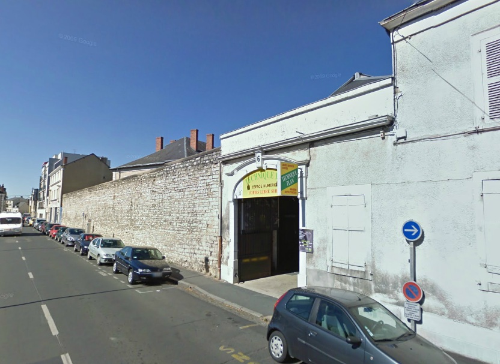
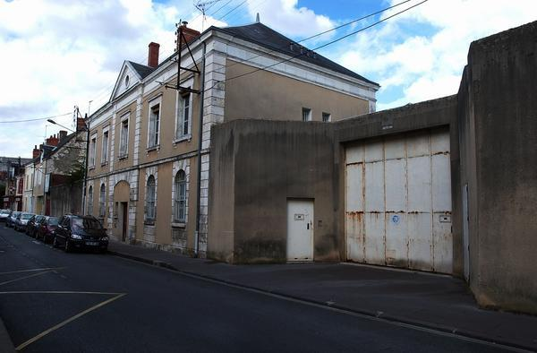
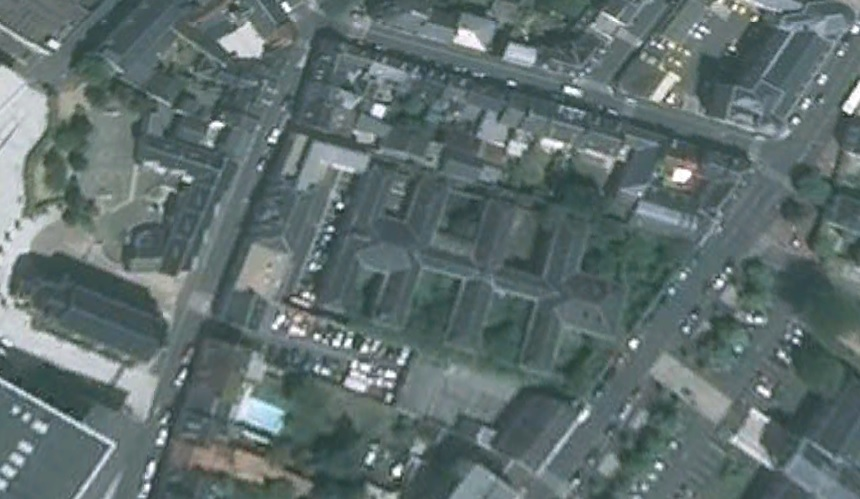
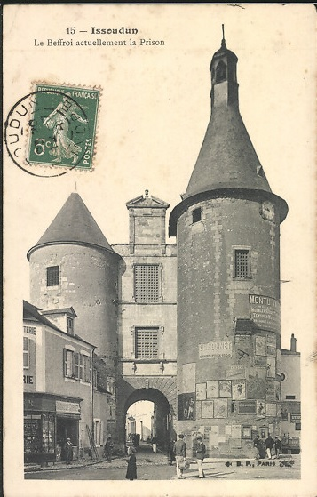

| Département | Images | Ville | Nom | Adresse | Période | Capacité | Histoire du lieu | Nombre d'exécutions |
| Indre (36) |    |
Châteauroux | Maison d'arrêt, de justice et de correction | Rue Paul-Louis Courier (ex-rue du Crucifix) | 1836-1991 | 68 places, 14 surveillants (1962) | Construite à compter de 1834 pour remplacer la prison des Guédons sise à l'actuel rond-point de l'hôtel de ville. Située de l'autre côté de la place du palais de justice. En démolition courant 2013 pour construire des logements. | Deux exécutions en 1922. |
| Indre (36) |  |
Issoudun | Beffroi | Rue de l'Horloge | -1926 | Construit au XIIe siècle, détruit durant les guerres de religion et reconstruit pendant la Renaissance. Le palais de justice fut édifié à proximité. | Aucune exécution | |
| Indre (36) | La Chatre | Donjon des Chauvigny - maison d'arrêt | 71, rue Venose | 1737-1926 | Ancienne forteresse, devenu musée en 1937 - notamment consacré à George Sand. | Aucune exécution | ||
| Indre (36) | Le Blanc | Maison d'arrêt | Rue de la République | 1858-1926 | Située à l'arrière du tribunal, et formée d'un seul bâtiment rectangulaire haut de deux niveaux et perpendiculaire au palais de justice, la prison ne laissa aucune trace dans l'histoire locale. Accessible par une impasse sans nom servant de parking débouchant sur la rue de la République, sur le côté ouest du tribunal, fermée en 1926, réouverte après le 25 juin 1942, et fermée après la Libération, elle fut à terme démolie pour construire des pavillons. | Aucune exécution |
{kind=link}
{kind=link}
{kind=link}
{kind=link}